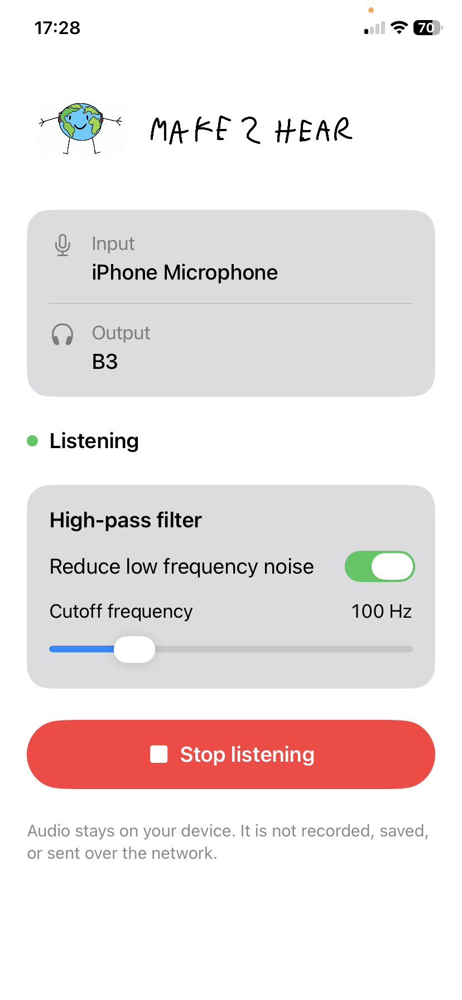

Make2Hear app.
The Make2Hear app is a separate listening tool. It will be available soon on the Apple App Store and Google Play.
App preview
Choose an audio input and output, start real-time listening, and use a high-pass filter to reduce low-frequency noise.
